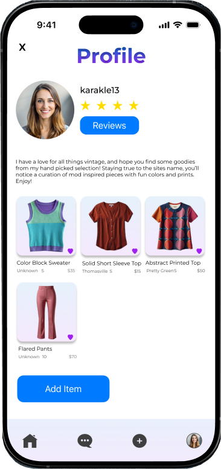
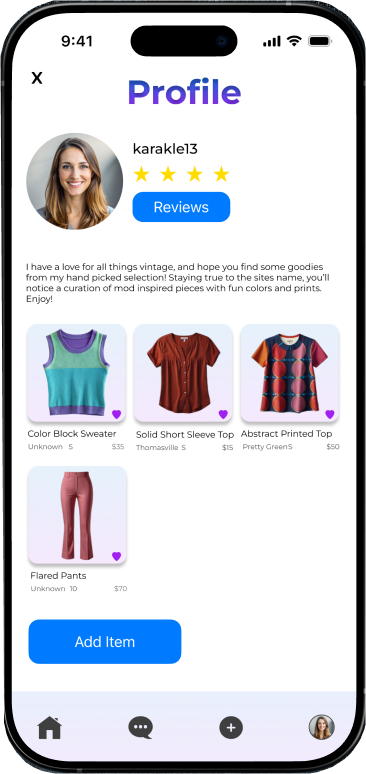

Mod Muse
UX/UI Case Study | Native App - iOS
The Problem
- Vintage shoppers often face fragmented, overwhelming online experiences lacking curation.
- Meanwhile, eco-conscious individuals need a seamless platform to buy and sell unique, secondhand pieces sustainably.
The Solution
- Mod Muse, a vintage fashion app inspired by the 1960s Mod aesthetic, offering a visually engaging, curated marketplace with seamless buy and sell functionality.
- Created a niche, emotionally resonant shopping experience that successfully bridges the gap between nostalgic design and modern usability, driving sustainability through a streamlined, dual-sided platform.
The Objective & Vision
The Objective: To provide a seamless and visually engaging user experience for buying and selling vintage pieces, inspired by the timeless appeal of the 1960s Mod aesthetic, while actively promoting sustainability through secondhand fashion.
The Vision: To be the premier destination for fashion enthusiasts and eco-conscious individuals seeking unique, curated vintage clothing.
The Context (Who, What, When, Why):
- Users - Fashion enthusiasts and eco-conscious individuals who appreciate vintage clothing and want a dedicated platform for unique pieces.
- Usage - Used primarily at home for browsing, but also ideal when shopping in person when users can't find specific pieces they need.
- Value Proposition - Intuitive design, curated selection, a visually engaging interface inspired by the Mod aesthetic, and a seamless platform for both buying and selling.
Prototypes
(swipe to view more)

 


Research & Discovery
Methodology:The project was informed by a combination of user interviews, surveys, and competitive analysis, ensuring the design was grounded in real user needs and market gaps.
Process Steps:
- Define - Independently conceived and defined Mod Muse's core purpose as a vintage fashion app promoting reuse and a unique aesthetic.
- Research - Gained understanding of user fashion habits, preferences for vintage clothing, and pain points in sustainable shopping.
- Design - Translated insights into intuitive solutions through information architecture, wireframing, and interactive prototyping.
- Test - Conducted usability testing to evaluate the design's effectiveness and identify key areas for iteration to ensure a seamless and engaging experience.
Strategic Impact:
- Balancing Nostalgia and Usability - A core learning was the importance of balancing a nostalgia-driven design (the Mod aesthetic) with modern usability standards. The final design proves that an emotional connection can be created without compromising seamless navigation and intuitive interactions.
- Brand Identity Development - Gained valuable experience in ensuring that every design choice—from typography to color schemes—aligned with the Mod aesthetic and enhanced the overall brand experience.
- Functional Focus - The project reinforced the significance of seamless navigation and intuitive interactions to create an enjoyable shopping and selling experience tailored to lovers of vintage fashion.
- Moving Forward (Future Vision) - Future iterations would focus on exploring enhanced personalization features, advanced search capabilities, and community-driven elements to increase user engagement.
Userflow

Low Fidelity Wireframes

Style Guide
COLORS


LOGO
The logo must:
- Be in all caps
- Have a 1 stroke in the color #FFFFFF
- Have an inner shadow
- Remain the color #0074D9
HEADINGS
Montserrat Bold or SemiBold
BODY
Montserrat Regular
Conclusion
Working on Mod Muse was an insightful journey that deepened my understanding of user-centered design and the importance of balancing aesthetics with functionality. Through extensive research and iteration, I learned how nostalgia-driven design can create an emotional connection with users while still maintaining modern usability standards.
This project reinforced the significance of seamless navigation, intuitive interactions, and engaging visuals. I also gained valuable experience in brand identity development, ensuring that every design choice—from typography to color schemes—aligned with the mod aesthetic and enhanced the overall experience. The impact of Mod Muse lies in its ability to provide a curated, enjoyable shopping experience tailored to lovers of vintage fashion. By prioritizing accessibility, personalization, and a visually immersive interface, the app successfully bridges the gap between past and present.
Moving forward, I’d love to explore more personalization features, enhanced search capabilities, and community-driven elements to make Mod Muse even more engaging. This project not only strengthened my UI/UX skills but also reaffirmed my passion for designing experiences that are both beautiful and functional.